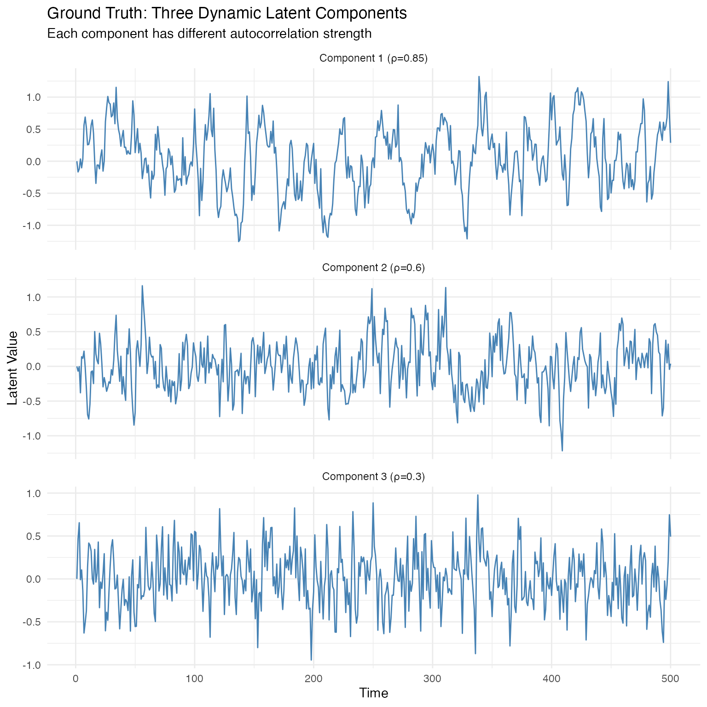
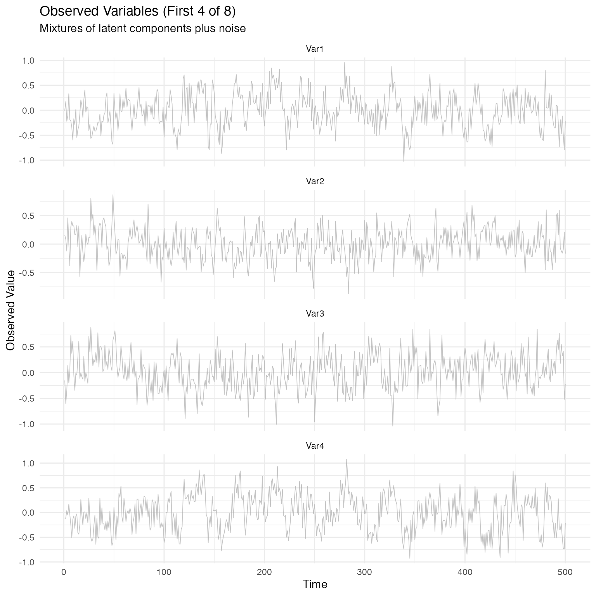
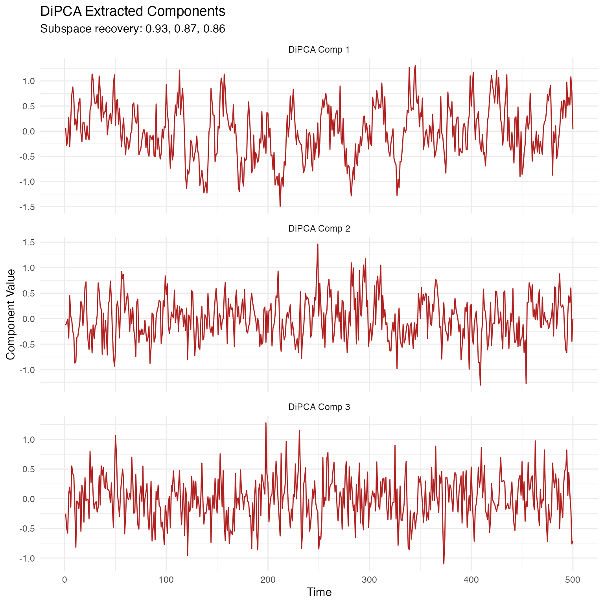
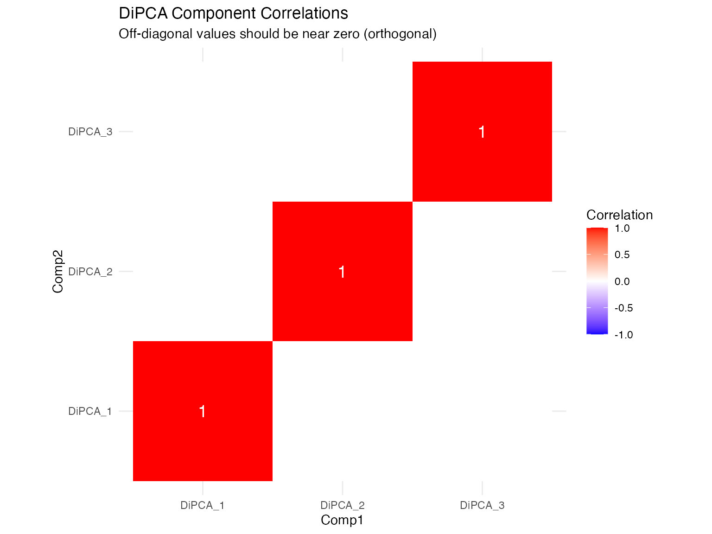
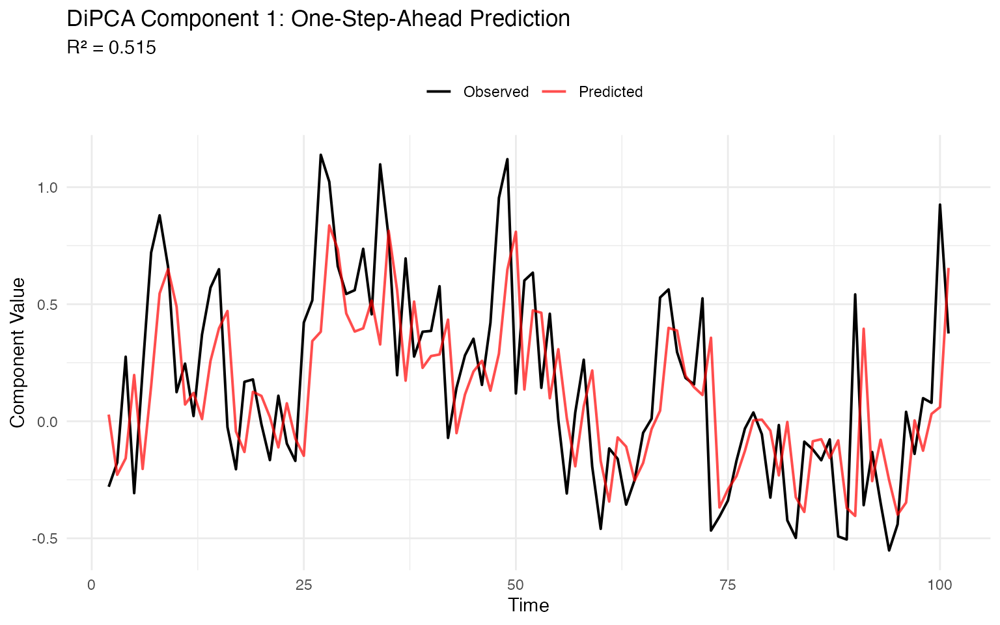
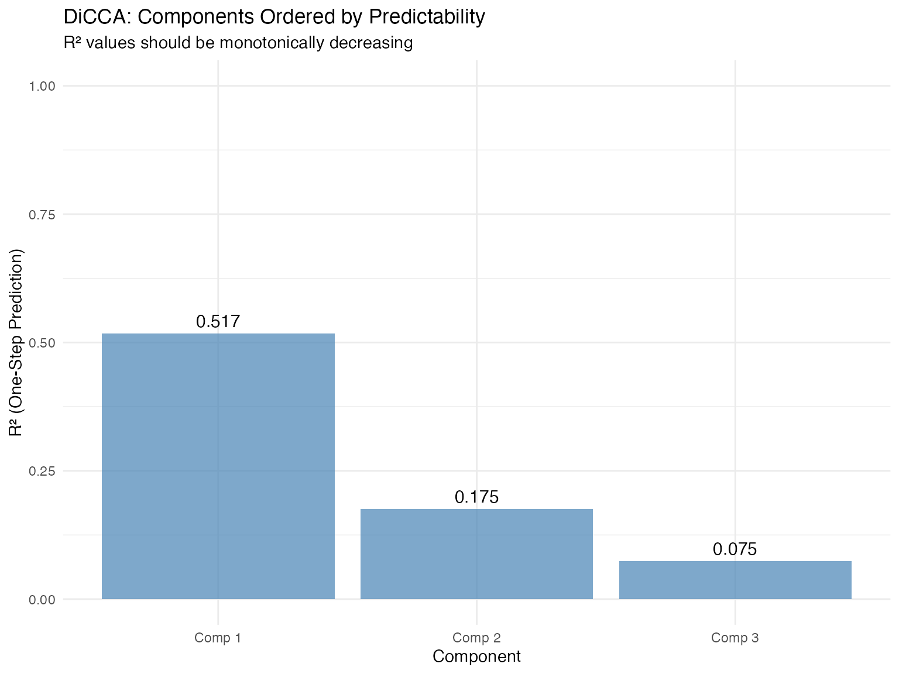
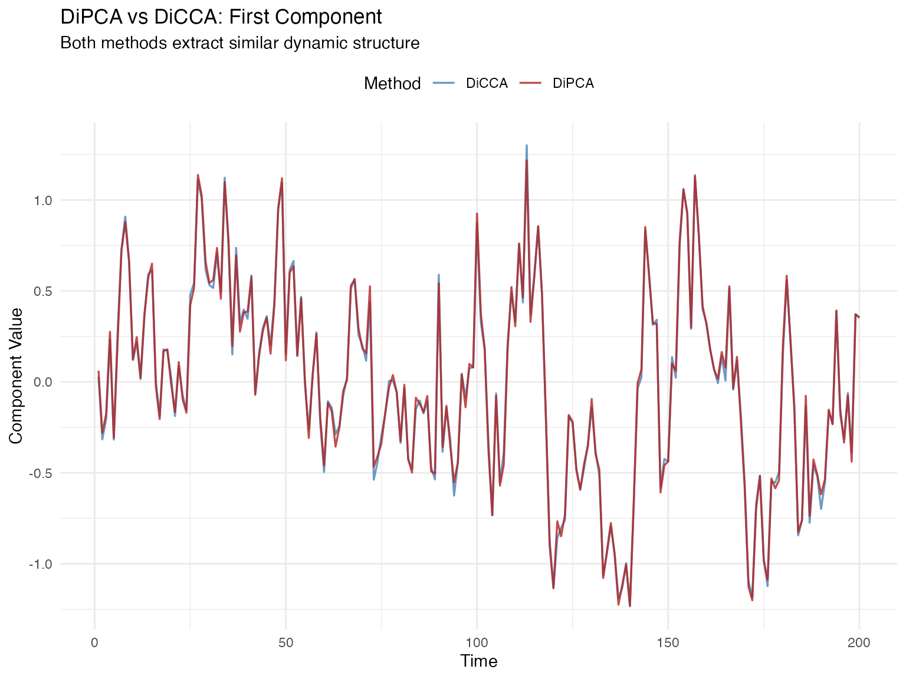
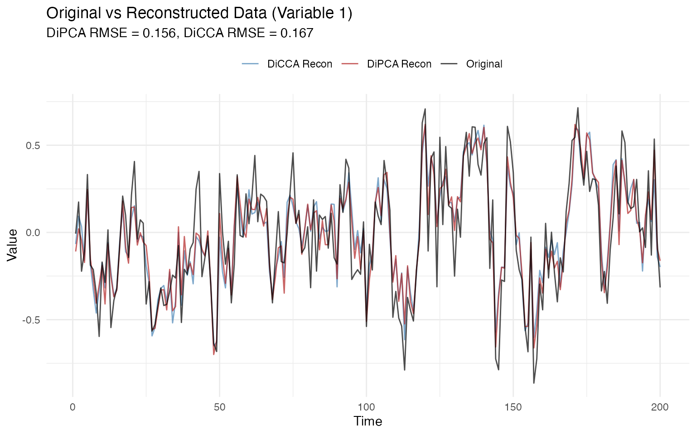
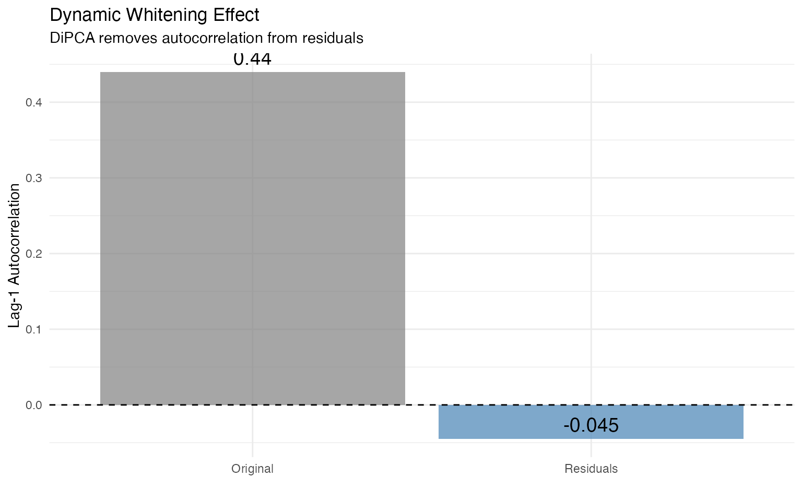

extracting-dynamic-components.RmdDynamic Inner PCA (DiPCA) and Dynamic Inner Canonical Correlation Analysis (DiCCA) are methods for extracting autocorrelated latent components from multivariate time series. Unlike standard PCA, which extracts static variance, these methods identify components that are both:
This vignette demonstrates these methods on simulated data where we know the ground truth, making it crystal clear what the methods are recovering.
library(dipca)
library(multivarious)
library(ggplot2)We’ll simulate data with three hidden dynamic components, each with different temporal dynamics:
These latent components are then mixed through a loading matrix P to create 8 observed variables.
set.seed(123)
# Simulation parameters
N <- 500 # Number of time points
m <- 8 # Number of observed variables
h <- 3 # Number of latent components
# VAR(1) dynamics: T_t = A * T_{t-1} + noise
A <- diag(c(0.85, 0.60, 0.30)) # Autocorrelation strengths
# Generate latent components
T_true <- matrix(0, N, h)
for (t in 2:N) {
T_true[t, ] <- A %*% T_true[t-1, ] + rnorm(h, sd = 0.3)
}
# Create orthogonal loading matrix (how latents mix to observables)
set.seed(456)
P_true <- qr.Q(qr(matrix(rnorm(m * h), m, h)))
# Observed data = latent components × loadings + noise
X <- T_true %*% t(P_true) + matrix(rnorm(N * m, sd = 0.2), N, m)
# Add column names for clarity
colnames(X) <- paste0("Var", 1:m)
colnames(T_true) <- paste0("True_", 1:h)
# Plot true latent components
df_true <- data.frame(
Time = rep(1:N, h),
Component = rep(paste0("Component ", 1:h, " (ρ=", diag(A), ")"), each = N),
Value = c(T_true[, 1], T_true[, 2], T_true[, 3])
)
p1 <- ggplot(df_true, aes(x = Time, y = Value)) +
geom_line(color = "steelblue", size = 0.5) +
facet_wrap(~ Component, ncol = 1, scales = "free_y") +
labs(title = "Ground Truth: Three Dynamic Latent Components",
subtitle = "Each component has different autocorrelation strength",
y = "Latent Value") +
theme_minimal()
# Plot observed variables (first 4 for clarity)
df_obs <- data.frame(
Time = rep(1:N, 4),
Variable = rep(paste0("Var", 1:4), each = N),
Value = c(X[, 1], X[, 2], X[, 3], X[, 4])
)
p2 <- ggplot(df_obs, aes(x = Time, y = Value)) +
geom_line(color = "darkgray", size = 0.3, alpha = 0.7) +
facet_wrap(~ Variable, ncol = 1, scales = "free_y") +
labs(title = "Observed Variables (First 4 of 8)",
subtitle = "Mixtures of latent components plus noise",
y = "Observed Value") +
theme_minimal()
p1
p2
DiPCA extracts components by maximizing their predictability from their own past while maintaining orthogonality.
# Fit DiPCA with lag order s=1 (VAR(1) model), extract 3 components
fit_dipca <- dipca(X, s = 1, l = 3, n_init = 3, max_iter = 500,
preproc = center())
# Extract estimated components
T_dipca <- scores(fit_dipca)
colnames(T_dipca) <- paste0("DiPCA_", 1:3)
# Compare true vs estimated components
# Note: Components may be recovered in different order and with sign flips
# We'll compute subspace similarity
# Compute correlation between true and estimated subspaces
U_true <- qr.Q(qr(T_true[50:N, ])) # Burn-in period
U_est <- qr.Q(qr(T_dipca[50:N, ]))
# Subspace similarity (singular values of cross-product)
similarity <- svd(t(U_true) %*% U_est)$d
cat("Subspace recovery (singular values):\n")
#> Subspace recovery (singular values):
print(round(similarity, 3))
#> [1] 0.932 0.867 0.862
cat("\nPerfect recovery would give [1, 1, 1]\n")
#>
#> Perfect recovery would give [1, 1, 1]
cat("We got:", paste(round(similarity, 3), collapse = ", "), "\n")
#> We got: 0.932, 0.867, 0.862
# Plot DiPCA components
df_dipca <- data.frame(
Time = rep(1:N, 3),
Component = rep(paste0("DiPCA Comp ", 1:3), each = N),
Value = c(T_dipca[, 1], T_dipca[, 2], T_dipca[, 3])
)
ggplot(df_dipca, aes(x = Time, y = Value)) +
geom_line(color = "firebrick", size = 0.5) +
facet_wrap(~ Component, ncol = 1, scales = "free_y") +
labs(title = "DiPCA Extracted Components",
subtitle = paste0("Subspace recovery: ",
paste(round(similarity, 2), collapse = ", ")),
y = "Component Value") +
theme_minimal()
One key property of DiPCA is that extracted components are orthogonal (uncorrelated).
# Compute correlation matrix of DiPCA components
cor_matrix <- cor(T_dipca)
# Visualize correlation matrix
df_cor <- as.data.frame(as.table(cor_matrix))
colnames(df_cor) <- c("Comp1", "Comp2", "Correlation")
ggplot(df_cor, aes(x = Comp1, y = Comp2, fill = Correlation)) +
geom_tile() +
geom_text(aes(label = round(Correlation, 2)), color = "white", size = 5) +
scale_fill_gradient2(low = "blue", mid = "white", high = "red",
midpoint = 0, limits = c(-1, 1)) +
labs(title = "DiPCA Component Correlations",
subtitle = "Off-diagonal values should be near zero (orthogonal)") +
theme_minimal() +
coord_fixed()
DiPCA components should be highly predictable from their own past. Let’s check the one-step-ahead predictions.
# Use predict() to get one-step-ahead forecasts
pred_dipca <- predict(fit_dipca, X)
# Compute R² for each component (correlation between t and t_hat)
r2_dipca <- sapply(1:3, function(j) {
valid_idx <- !is.na(pred_dipca$scores_hat[, j])
cor(pred_dipca$scores[valid_idx, j],
pred_dipca$scores_hat[valid_idx, j])^2
})
cat("DiPCA component predictability (R²):\n")
#> DiPCA component predictability (R²):
cat(" Component 1:", round(r2_dipca[1], 3), "\n")
#> Component 1: 0.515
cat(" Component 2:", round(r2_dipca[2], 3), "\n")
#> Component 2: 0.177
cat(" Component 3:", round(r2_dipca[3], 3), "\n")
#> Component 3: 0.076
# Plot observed vs predicted for first component
df_pred <- data.frame(
Time = 2:N,
Observed = pred_dipca$scores[2:N, 1],
Predicted = pred_dipca$scores_hat[2:N, 1]
)
ggplot(df_pred[1:100, ], aes(x = Time)) +
geom_line(aes(y = Observed, color = "Observed"), size = 0.7) +
geom_line(aes(y = Predicted, color = "Predicted"), size = 0.7, alpha = 0.7) +
scale_color_manual(values = c("Observed" = "black", "Predicted" = "red")) +
labs(title = "DiPCA Component 1: One-Step-Ahead Prediction",
subtitle = paste0("R² = ", round(r2_dipca[1], 3)),
y = "Component Value",
color = "") +
theme_minimal() +
theme(legend.position = "top")
DiCCA extracts components by maximizing the canonical correlation between each component and its own past. This typically yields components in descending order of predictability.
# Fit DiCCA with lag order s=1, extract 3 components
fit_dicca <- dicca(X, s = 1, l = 3, inner = "classic", n_init = 3,
max_iter = 500, preproc = center())
# Extract estimated components
T_dicca <- scores(fit_dicca)
colnames(T_dicca) <- paste0("DiCCA_", 1:3)
# DiCCA stores R² values directly
cat("DiCCA component predictability (R²):\n")
#> DiCCA component predictability (R²):
cat(" Component 1:", round(fit_dicca$R2[1], 3), "\n")
#> Component 1: 0.517
cat(" Component 2:", round(fit_dicca$R2[2], 3), "\n")
#> Component 2: 0.175
cat(" Component 3:", round(fit_dicca$R2[3], 3), "\n")
#> Component 3: 0.075
cat("\nNote: DiCCA extracts components in descending R² order\n")
#>
#> Note: DiCCA extracts components in descending R² orderDiCCA’s canonical correlation objective ensures components are extracted in descending order of predictability.
df_r2 <- data.frame(
Component = paste0("Comp ", 1:3),
R2 = fit_dicca$R2,
Method = "DiCCA"
)
ggplot(df_r2, aes(x = Component, y = R2)) +
geom_bar(stat = "identity", fill = "steelblue", alpha = 0.7) +
geom_text(aes(label = round(R2, 3)), vjust = -0.5, size = 4) +
ylim(0, 1) +
labs(title = "DiCCA: Components Ordered by Predictability",
subtitle = "R² values should be monotonically decreasing",
y = "R² (One-Step Prediction)") +
theme_minimal()
# Plot first components from both methods
df_compare <- data.frame(
Time = rep(1:200, 2),
Value = c(T_dipca[1:200, 1], T_dicca[1:200, 1]),
Method = rep(c("DiPCA", "DiCCA"), each = 200)
)
ggplot(df_compare, aes(x = Time, y = Value, color = Method)) +
geom_line(size = 0.6, alpha = 0.8) +
scale_color_manual(values = c("DiPCA" = "firebrick", "DiCCA" = "steelblue")) +
labs(title = "DiPCA vs DiCCA: First Component",
subtitle = "Both methods extract similar dynamic structure",
y = "Component Value") +
theme_minimal() +
theme(legend.position = "top")
Both methods allow us to reconstruct the original data from the extracted components.
# Reconstruct data using all 3 components
X_recon_dipca <- reconstruct(fit_dipca)
X_recon_dicca <- reconstruct(fit_dicca)
# Compute reconstruction error (RMSE)
rmse_dipca <- sqrt(mean((X - X_recon_dipca)^2))
rmse_dicca <- sqrt(mean((X - X_recon_dicca)^2))
cat("Reconstruction RMSE:\n")
#> Reconstruction RMSE:
cat(" DiPCA:", round(rmse_dipca, 4), "\n")
#> DiPCA: 0.1563
cat(" DiCCA:", round(rmse_dicca, 4), "\n")
#> DiCCA: 0.167
# Plot original vs reconstructed for one variable
df_recon <- data.frame(
Time = rep(1:200, 3),
Value = c(X[1:200, 1], X_recon_dipca[1:200, 1], X_recon_dicca[1:200, 1]),
Type = rep(c("Original", "DiPCA Recon", "DiCCA Recon"), each = 200)
)
ggplot(df_recon, aes(x = Time, y = Value, color = Type)) +
geom_line(size = 0.5, alpha = 0.7) +
scale_color_manual(values = c("Original" = "black",
"DiPCA Recon" = "firebrick",
"DiCCA Recon" = "steelblue")) +
labs(title = "Original vs Reconstructed Data (Variable 1)",
subtitle = paste0("DiPCA RMSE = ", round(rmse_dipca, 3),
", DiCCA RMSE = ", round(rmse_dicca, 3)),
y = "Value",
color = "") +
theme_minimal() +
theme(legend.position = "top")
A key application of DiPCA/DiCCA is dynamic whitening - removing temporal structure from the data. The residuals after reconstruction should have much less autocorrelation than the original data.
# Compute residuals (prediction errors)
resid_dipca <- stats::residuals(fit_dipca, X)
# Compute autocorrelation for original and residual data
acf_original <- mean(sapply(1:4, function(j) {
acf(X[, j], lag.max = 1, plot = FALSE)$acf[2]
}))
acf_residual <- mean(sapply(1:4, function(j) {
valid_idx <- is.finite(resid_dipca$e_hat[, j])
if (sum(valid_idx) > 10) {
acf(resid_dipca$e_hat[valid_idx, j], lag.max = 1, plot = FALSE)$acf[2]
} else {
NA
}
}), na.rm = TRUE)
cat("Lag-1 Autocorrelation (average across variables):\n")
#> Lag-1 Autocorrelation (average across variables):
cat(" Original data:", round(acf_original, 3), "\n")
#> Original data: 0.44
cat(" Residuals: ", round(acf_residual, 3), "\n")
#> Residuals: -0.045
cat(" Reduction: ", round(100 * (1 - abs(acf_residual)/abs(acf_original)), 1), "%\n")
#> Reduction: 89.8 %
# Visualize ACF reduction
df_acf <- data.frame(
Type = c("Original", "Residuals"),
ACF = c(acf_original, acf_residual)
)
ggplot(df_acf, aes(x = Type, y = ACF)) +
geom_bar(stat = "identity", fill = c("gray50", "steelblue"), alpha = 0.7) +
geom_text(aes(label = round(ACF, 3)), vjust = -0.5, size = 5) +
geom_hline(yintercept = 0, linetype = "dashed") +
labs(title = "Dynamic Whitening Effect",
subtitle = "DiPCA removes autocorrelation from residuals",
y = "Lag-1 Autocorrelation",
x = "") +
theme_minimal()
This vignette demonstrated:
Simulation: Created data with known ground truth - 3 dynamic latent components mixed into 8 observed variables
DiPCA:
DiCCA:
Applications:
Both methods leverage the multivarious framework for consistent preprocessing and projection operations.
Dong, Y., & Qin, S. J. (2018). Dynamic-inner canonical correlation and causality analysis for high dimensional time series data. IFAC-PapersOnLine, 51(18), 476-481.
sessionInfo()
#> R version 4.5.1 (2025-06-13)
#> Platform: aarch64-apple-darwin20
#> Running under: macOS Sonoma 14.3
#>
#> Matrix products: default
#> BLAS: /Library/Frameworks/R.framework/Versions/4.5-arm64/Resources/lib/libRblas.0.dylib
#> LAPACK: /Library/Frameworks/R.framework/Versions/4.5-arm64/Resources/lib/libRlapack.dylib; LAPACK version 3.12.1
#>
#> locale:
#> [1] en_CA.UTF-8/en_CA.UTF-8/en_CA.UTF-8/C/en_CA.UTF-8/en_CA.UTF-8
#>
#> time zone: America/Toronto
#> tzcode source: internal
#>
#> attached base packages:
#> [1] stats graphics grDevices utils datasets methods base
#>
#> other attached packages:
#> [1] ggplot2_4.0.2 multivarious_0.3.1 dipca_0.1.0
#>
#> loaded via a namespace (and not attached):
#> [1] GPArotation_2025.3-1 sass_0.4.10 future_1.69.0
#> [4] generics_0.1.4 shape_1.4.6.1 lattice_0.22-7
#> [7] listenv_0.10.0 digest_0.6.39 magrittr_2.0.4
#> [10] evaluate_1.0.5 grid_4.5.1 RColorBrewer_1.1-3
#> [13] iterators_1.0.14 fastmap_1.2.0 foreach_1.5.2
#> [16] glmnet_4.1-10 jsonlite_2.0.0 Matrix_1.7-4
#> [19] ggrepel_0.9.6 RSpectra_0.16-2 survival_3.8-3
#> [22] scales_1.4.0 pls_2.8-5 codetools_0.2-20
#> [25] textshaping_1.0.4 jquerylib_0.1.4 cli_3.6.5
#> [28] rlang_1.1.7 chk_0.10.0 parallelly_1.46.1
#> [31] future.apply_1.20.1 splines_4.5.1 withr_3.0.2
#> [34] cachem_1.1.0 yaml_2.3.12 otel_0.2.0
#> [37] tools_4.5.1 parallel_4.5.1 dplyr_1.2.0
#> [40] corpcor_1.6.10 globals_0.19.0 rsvd_1.0.5
#> [43] assertthat_0.2.1 vctrs_0.7.1 R6_2.6.1
#> [46] lifecycle_1.0.5 fs_1.6.6 htmlwidgets_1.6.4
#> [49] irlba_2.3.7 ragg_1.5.0 pkgconfig_2.0.3
#> [52] desc_1.4.3 geigen_2.3 pkgdown_2.2.0
#> [55] pillar_1.11.1 bslib_0.10.0 gtable_0.3.6
#> [58] glue_1.8.0 Rcpp_1.1.1 systemfonts_1.3.1
#> [61] xfun_0.56 tibble_3.3.1 tidyselect_1.2.1
#> [64] svd_0.5.8 knitr_1.51 farver_2.1.2
#> [67] htmltools_0.5.9 labeling_0.4.3 rmarkdown_2.30
#> [70] compiler_4.5.1 S7_0.2.1